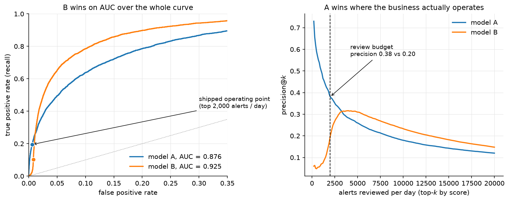
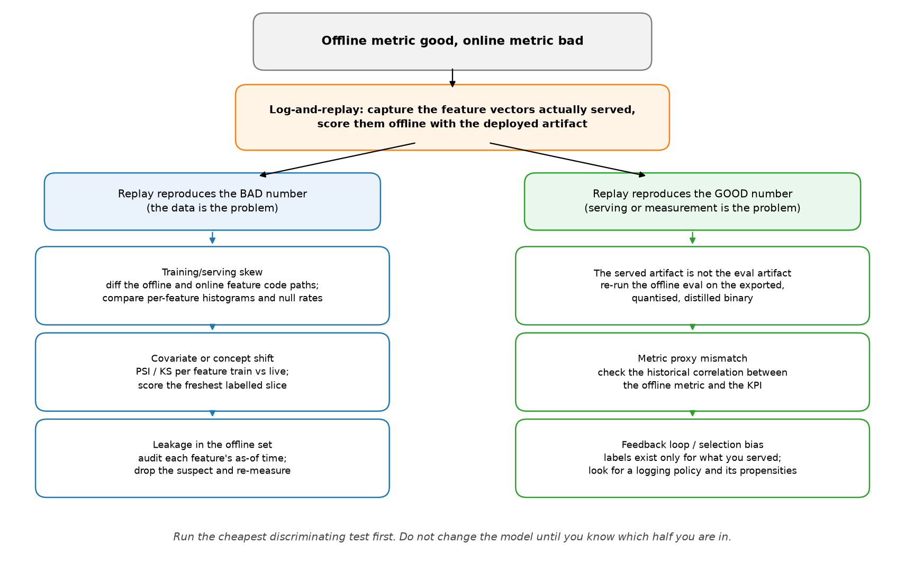

Evaluation and debugging¶
Why this matters at staff level. This is where the level distinction is made. Anyone can recite a definition of precision; what interviewers are buying is someone who can be handed a broken production system and narrow the cause in ten minutes without thrashing. Treat every debugging question here as a decision tree you run live: name the hypothesis classes, pick the cheapest test that splits them, and say out loud that you will not touch the model until you know which branch you are in.
The questions¶
1. How to split a dataset, and what CV estimates¶
Q: How should you split a dataset, and how does cross-validation connect to bias and variance?
The answer. The split exists to produce an unbiased estimate of generalisation error on data the model never touched. Train fits parameters, validation tunes hyperparameters and selects models, test is touched once at the end. The cardinal sin is letting test influence any decision: every peek-and-adjust converts test into validation and makes the final number optimistic by an amount you cannot measure.
K-fold cross-validation averages performance over \(K\) partitions so every point serves as validation once. The bias and variance of interest here belong to the estimator, not to the model:
- Small \(K\) (2 or 3): each model trains on little data, so it is weaker than the model you will actually ship, and CV overestimates error. The folds overlap less, so the estimate has lower variance.
- Large \(K\), up to leave-one-out: each model trains on nearly all the data, so the estimate is nearly unbiased, but the \(n\) models are fit on near-identical data, their errors are highly correlated, and the variance of the estimate is high. It is also \(n\) times the compute.
- \(K = 5\) or \(10\) is the usual operating point on that trade-off curve.
Staff move
Separate two variances that interviewers routinely conflate: the bias and variance of the model against the bias and variance of the CV estimate of its error. "Cross-validation is estimating a number. That number has its own bias and variance, which is a statement about how much I should trust it, and it is a different question from whether the model itself is high-variance." Then add the practical consequence: a 0.2-point difference between two CV means is not a result until you have bootstrapped the difference and looked at its interval.
Goes deeper: evaluation.
2. When k-fold CV is optimistically biased¶
Q: Describe a scenario where k-fold CV is optimistically biased even when the implementation is correct.
The answer. Four distinct causes, and the first is the one that bites hardest.
- Dependent samples split randomly. Time series, grouped rows, near-duplicates. Consecutive video frames, several records per user, augmented copies of one image: if correlated rows straddle the boundary, the model has effectively seen the test data. CV looks excellent and production fails. Fix: grouped or blocked CV, splitting on the unit of independence (clip, user, patient, session), or forward-chaining for time series.
- Preprocessing fit on the full dataset before CV. A scaler, an imputer, a feature selector, or worst of all a supervised target encoding fit on all the data leaks test statistics into every fold. Fix: refit the entire pipeline inside each fold.
- Selecting hyperparameters on the CV you then report. If you pick the best configuration by CV score and report that score, you have reported the maximum of a noisy quantity, which is biased upward by the selection itself. Fix: nested CV, an inner loop to tune and an outer loop to estimate.
- Class imbalance with non-stratified folds, which inflates variance and can bias the estimate depending on the metric. Fix: stratified K-fold.
Staff move
Give the general principle plus one war story. "Cross-validation is honest only when the train-test boundary respects the same independence structure as the train-deployment boundary. In perception, random frame splits give beautiful offline numbers and the model dies on a new scene, so the first question I ask about any dataset is: what is the unit of independence here? I split on that, and I check for near-duplicates across the split with an embedding nearest-neighbour pass before I trust any number."
Goes deeper: evaluation.
3. AUC improves, the business KPI degrades¶
Q: What is AUC, and describe a scenario where AUC improves but the business KPI gets worse.
The answer. ROC-AUC is the probability that the model ranks a random positive above a random negative: a threshold-independent, rank-based measure of discrimination, invariant to class balance and to where you set the threshold. Exactly those invariances are how it rises while the business loses.
- AUC is a global ranking; the business lives at one operating point. AUC can improve by fixing the ordering in a region you never operate in, such as correctly sorting very-low-probability negatives, while degrading near your actual threshold. A model with higher AUC can have worse precision at the recall you ship at.
- Imbalance plus the wrong metric. At a 0.1% positive rate, true negatives dominate the false positive rate, so ROC-AUC looks high and moves little. PR-AUC is the honest summary under heavy imbalance, because its baseline is the positive rate and it responds when false positives flood the queue.
- Asymmetric costs. If a false negative costs 100 times a false positive, a ranking metric that treats errors symmetrically cannot see a reshuffle toward the expensive kind.
- Ranking is not calibration. Anything downstream that uses probabilities (expected-value bidding, thresholded actions, capacity planning) depends on calibration, which AUC is blind to.
- The metric is not the goal. Higher AUC on click prediction can lower revenue if it shifts traffic toward high-click low-value items, or erodes the long-tail diversity that drives retention.

The figure is case 1 and case 2 at once, on synthetic data with a 2% positive
rate. A new feature in model B separates most of the population better than model
A does, and the summary metric rewards that (AUC 0.876 to 0.925). The same feature
also fires on a benign slice of negatives, which lands at the very top of the
score list, and the analyst queue only ever sees the top 2,000 alerts a day.
Precision there falls from 0.38 to 0.20, and recall at that queue depth falls from
0.20 to 0.10. Every number in this paragraph comes from
figures/part19_auc_kpi.py, so you can change the queue depth and watch the
verdict flip.
Correction to a common phrasing
The rank identity is exact only with no ties. With ties, \(\mathrm{AUC} = P(s^+ > s^-) + \tfrac12 P(s^+ = s^-)\). It matters whenever your scores are discrete, which includes tree ensembles with few leaves, heavily quantised models, and any rule-based score you are benchmarking against.
Staff move
Refuse to let an aggregate metric be the verdict. "Before I compare two models I want an offline metric that is a faithful proxy for the online objective. I evaluate at the operating point that ships (precision@k, recall at fixed FPR), use PR-AUC under imbalance, fold in a cost matrix to get expected cost, and check calibration separately, because those are four different questions. The arbiter is an online A/B test on the real KPI. Offline AUC is a screening tool, and the classic trap is optimising a convenient aggregate that is correlated with the business goal without being aligned to it."
Goes deeper: evaluation, and fraud and anomaly detection for a system where the queue depth sets the metric.
4. Calibration: what it is, how to test it, how to fix it¶
Q: What is probability calibration? How do you test it and fix it?
The answer. A model is calibrated when its predicted probabilities match empirical frequencies: among all the predictions of 0.7, about 70% are positive. Calibration and discrimination are orthogonal, and a model can rank perfectly while being wildly overconfident.
Testing. A reliability diagram bins predictions and plots mean predicted probability against observed frequency, with the diagonal as perfect. Expected calibration error averages the gap across bins, weighted by bin population, and is sensitive to the binning scheme, so report it beside the diagram and never alone. Proper scoring rules (Brier, log loss) decompose into calibration and refinement terms, which is why they move for the right reasons.
Fixing, post-hoc, on a held-out calibration set.
- Platt scaling: fit a logistic regression on the scores. Cheap, assumes a sigmoidal distortion, fine on small data.
- Isotonic regression: fit a monotone step function. Non-parametric and more flexible, needs more data, overfits on small sets.
- Temperature scaling: divide the logits by one learned scalar \(T\). The default for modern networks: one parameter, leaves the argmax and therefore the accuracy untouched, and only softens or sharpens the distribution.
Staff move
Say why modern networks are miscalibrated and what that implies for maintenance. Networks trained with cross-entropy to near-zero training loss are systematically overconfident, and depth, width, weight decay and normalization all move calibration (Guo et al., 2017). "Temperature scaling is my default because it is one parameter and preserves ranking. The part teams miss is that calibration is distribution-specific: a temperature fit in July does not hold in November under shift, so calibration is monitored and refit on a schedule, not set once. If I need calibration during training I reach for label smoothing, and I flag that focal loss improves imbalance handling while changing calibration behaviour in its own way."
Goes deeper: uncertainty and reliability.
5. Symmetric vs asymmetric label noise¶
Q: How does symmetric versus asymmetric label noise affect learning, and what are the mitigations?
The answer. Symmetric noise flips a label to any other class with equal probability, independent of the true class. Asymmetric (class-conditional) noise follows structure: truck confused with bus, a rare defect labelled as the common one. Real noise is almost always asymmetric, and the distinction changes both the damage and the remedy.
- Symmetric noise attenuates. It behaves like accidental label smoothing: slower learning, worse confidence, but the Bayes-optimal classifier is often unchanged at moderate noise rates because the errors are unbiased. Networks resist it early, since they fit clean structure first and memorise noise later.
- Asymmetric noise biases. It shifts \(P(Y \mid X)\) consistently toward the systematic confusion, and it disproportionately corrupts minority classes, which is the common real pattern. It destroys recall on exactly the classes you built the system for, and average metrics hide it.
Mitigations: bounded robust losses (MAE, generalized cross-entropy, symmetric cross-entropy) so one confidently wrong label cannot dominate the gradient the way unbounded log loss allows; small-loss selection exploiting the memorisation effect, as in co-teaching, where two networks select low-loss examples for each other; label smoothing for mild symmetric noise; noise-transition-matrix modelling, estimating \(T\) and applying forward or backward loss correction, which targets asymmetric noise directly; and confident learning to find and prune or relabel likely errors (Northcutt et al., 2019).
Staff move
Characterise before you mitigate, then push the problem upstream. "First I estimate the noise transition matrix from a small clean audit set, because the mitigation depends entirely on which kind of noise I have. Then I run confident learning to surface the worst offenders for re-annotation and add a robust loss as insurance. I would also push back on the framing: in a data engine, label noise is not a fixed property to model around. It is a signal telling me where my annotation guidelines or my class taxonomy are ambiguous, and that is fixable upstream at a fraction of the cost."
Goes deeper: evaluation and, for the labelling loop, chapter 5.
6. Missing data¶
Q: How do you handle missing data?
The answer. Diagnose the mechanism first, because it decides what is valid.
- MCAR, missing completely at random: missingness is independent of everything. Dropping rows is unbiased and only costs you data.
- MAR, missing at random: missingness depends on observed features. Conditional imputation is valid.
- MNAR, missing not at random: missingness depends on the unobserved value itself (income missing because it is high). Imputation is biased and you may have to model the missingness process explicitly.
Methods. Simple imputation (mean, median, mode) is fast and distorts variance and correlations. Model-based imputation (KNN, MICE) captures relationships at higher cost. Adding a binary was-missing indicator is frequently the strongest move available, because the fact of being missing is itself predictive, which is precisely the MNAR signal. Gradient-boosted tree implementations handle missingness natively by learning a default direction at each split.
Staff move
Name the serving-time asymmetry, which no offline metric catches. "Imputation statistics are fit on train only, inside the CV loop, same as any other transform. The failure I actually watch for is a feature that is never missing in the training warehouse and frequently missing at serving time, because upstream a service times out and the feature store returns a default. The model then sees an input distribution it never trained on, and the only way to find it is to monitor per-feature null rates in production against training."
Goes deeper: probabilistic models and EM, where missing data is the motivating case for EM.
7. Class imbalance¶
Q: How do you handle class imbalance?
The answer. Layered, cheapest first.
- Change the metric and the threshold before you touch the data. Often the problem is that accuracy is the wrong lens. Use PR-AUC, F-beta, or recall at fixed precision, and tune the decision threshold on validation. Many models rank fine and need an operating point, not surgery.
- Cost-sensitive loss. Weight the minority class by inverse frequency or by a real cost matrix. No resampling artifacts, no data thrown away. Focal loss is the vision default, down-weighting easy negatives by \((1 - p_t)^\gamma\) so the gradient concentrates on hard and rare examples; it was designed for the extreme foreground-background imbalance of dense detection (Lin et al., 2017).
- Resampling. Oversample the minority (SMOTE and variants synthesise interpolated points, which can be unrealistic in high dimensions) or undersample the majority (fast, discards data).
- Reframe. At extreme rates, treat it as anomaly detection. For long-tailed recognition, decouple representation learning from the classifier: train features on the natural distribution and rebalance only the classifier head.
Staff move
Attack the reflex and name the leakage variant. "The most common mistake is reaching for SMOTE first. I start by asking whether the imbalance is actually hurting the metric I care about at the operating point I ship at, and often the answer is threshold tuning plus a proper metric. For deep vision, class-balanced or focal losses beat resampling, because resampling a 1000:1 dataset either discards most of your data or duplicates a handful of examples thousands of times. And resampling happens inside the fold: SMOTE before the split synthesises test points out of training neighbours, which is textbook leakage that produces a beautiful number and a dead model."
Goes deeper: evaluation and object detection for focal loss in context.
8. Detecting data leakage¶
Q: How do you detect data leakage?
The answer. Leakage is information available at training time that will not be available at prediction time, or that is a proxy for the label. It produces excellent offline numbers that evaporate in production. Detection mixes smell tests with process.
- Suspiciously strong performance. AUC of 0.999 on a hard problem is guilty until proven innocent. The correct first reaction is "what leaked", never "great".
- Feature importance audit. One feature dominating, or a near-perfect single predictor, is usually a post-outcome field, an ID correlated with the label, or a timestamp that encodes the answer.
- Temporal sanity. Every feature has an as-of time. Any feature computed with information from at or after prediction time leaks.
- Train-test contamination. Duplicates and near-duplicates across the split, preprocessing fit on everything, grouped samples split randomly.
- Engineered-feature leakage. Target encoding that includes the row's own label, aggregates computed over the full period, future rollups.
- Ablation. Drop the suspect feature and re-measure. A fall from "too good" to "plausible" is your confirmation.
Staff move
Prefer process to detection, and give the one-sentence test you apply to every feature. "I enforce train-only fitting for every transform through pipeline objects, I split before I touch the data, I split on the unit of independence, and I treat any feature whose value depends on timing as a suspect. The mental model is: at the instant I make this prediction in production, do I have this feature, computed only from the past? If I cannot answer yes with certainty, it is a leak risk. Leakage is expensive precisely because it is invisible offline; you find it when the model ships and misses its eval by a mile."
Goes deeper: the system-design framework and evaluation.
9. Debug: good offline, bad online¶
Q: The model performs well offline and badly online. How do you debug it?
The answer. Partition the hypothesis space, then run the one experiment that splits it in half before touching the model.

Log-and-replay first. Capture the exact feature vectors served in production, score them offline with the deployed artifact, and compare against the production outcome. If the replay reproduces the bad online number, the model is fine and the data is the problem. If the replay reproduces the good offline number, the problem is in serving or in measurement. One experiment, half the tree gone.
The five hypotheses, with the test that confirms each:
- Training/serving skew, the most common cause. Features computed by different code paths offline and online, different feature versions, a unit or time-zone mismatch, a feature stale or null in production. Test: per-feature histograms and null rates, production against training, plus the replay above.
- Distribution shift. New users, new content, seasonality, a new camera. Test: PSI or KS per feature, train against live, and performance on the freshest labelled slice.
- Leakage. The offline number was inflated by a feature that is not truly available online. Test: the as-of-time audit from question 8.
- Proxy mismatch and feedback delay. You optimised AUC on logged labels and the business measures revenue with delayed, biased feedback, since outcomes are observed only for items you chose to serve. Test: check whether this offline metric has historically moved with the KPI at all, and look at the logging policy and its propensities.
- Latency-induced degradation. To hit the budget you quantised, distilled, or truncated features, so the served model is not the evaluated model. Test: re-run the offline eval against the exported binary, not the research checkpoint.
Staff move
State the discipline, then the organisational fix. "My first move is log-and-replay, because that single experiment cleaves the space and I refuse to start changing the model before I know which half I am in. The durable fix is a feature store with one definition shared by training and serving, which removes skew structurally instead of catching it case by case. I also want the deployed artifact, and not the checkpoint, to be the thing the eval harness loads, because that closes hypothesis 5 permanently."
Goes deeper: the system-design framework and uncertainty and reliability.
10. Debug: loss falls, accuracy flat¶
Q: Training loss decreases but accuracy stays flat. What is happening?
The answer. Four enumerable causes.
- Imbalance with a degenerate majority prediction. Loss falls as the model grows more confident on the majority class while never crossing the threshold for the minority, so overall accuracy does not move. Check per-class metrics and the confusion matrix.
- Confidence sharpening without rank change. Cross-entropy keeps rewarding higher confidence on already-correct examples, so the loss falls while the argmax is unchanged. The model is sharpening, not reclassifying.
- Threshold mismatch. Accuracy uses 0.5 while your problem needs something else. Ranking is improving and a rank metric would show it.
- Accuracy is the wrong or a buggy metric. Measured on a subset, computed incorrectly, or too coarse to track a continuous loss.
Run them in this order, because each step costs less than the one after it: plot the prediction histogram and the confusion matrix (one minute, catches the degenerate-majority case), compute AUC or PR-AUC on the same predictions (one minute, separates sharpening from stalling), sweep the threshold on validation (catches the mismatch), then read the accuracy code.
Staff move
Switch instruments before you switch hypotheses. "I stop trusting accuracy as the lens and look at AUC or PR-AUC plus per-class metrics. Falling loss with flat accuracy almost always means the model is improving in a way accuracy cannot see, which is imbalance or sharpening. If the rank metric is also flat, then the loss decrease is confidence inflation on the majority class and I have a real imbalance problem to fix with weighting and threshold tuning."
Goes deeper: evaluation.
11. Debug: NaNs and Infs in training¶
Q: Training is unstable and you are getting NaNs. Walk me through it.
The answer. Walk the suspects in order of likelihood.
- Learning rate too high: loss explodes, overflows, becomes NaN. Lower it first and turn on gradient clipping.
- Numerical instability in the loss: \(\log 0\) from a probability that hit
exactly zero or one, an un-stabilised
exp, a divide by zero in a normalization. Use the log-sum-exp trick,log_softmax, an epsilon in denominators, and the framework's fused logits-based cross-entropy instead of taking the log of a softmax by hand. - Exploding gradients in deep or recurrent stacks: clip the global gradient norm.
- Bad input data: NaNs already present, unnormalised inputs, one corrupt sample. Assert on inputs and on the loss every step and isolate the batch that triggers it.
- fp16 overflow: the dynamic range is too small. Use loss scaling, or bf16, which has fp32's exponent range.
- A zero-variance batch in BatchNorm, or a 0/0 from an empty mask.
Staff move
Describe a workflow, not a list. "I make the failure reproducible by seeding and saving the offending batch, then use anomaly detection or forward hooks with NaN checks to find the first op that produces a NaN. Debugging the symptom, which is NaN weights ten layers later, wastes hours. Most of the time it is the learning rate or an unstabilised log or exp. I also keep a numerical hygiene checklist that prevents the whole class: logits-based losses, epsilons in denominators, clipping on by default, and bf16 over fp16 wherever the hardware allows, because the range headroom removes a category of bug."
Goes deeper: backpropagation and training systems.
12. Distribution shift in a deployed system¶
Q: How do you handle distribution shift in a deployed system?
The answer. Two halves: detect and respond.
Detect. Monitor input distributions (population stability index, KS tests, embedding-space drift detectors), monitor the prediction distribution for output drift, and monitor performance on freshly labelled data, which is the only ground truth and which costs you a labelling pipeline and a delay. Unsupervised input alarms are leading indicators; a measured performance drop is the lagging truth.
Respond, according to the shift type and whether you have target labels:
- Scheduled retraining on fresh data, with the cadence set by how fast the drift moves. Handles gradual drift and is the right first answer.
- Online or continual learning for fast drift, with guardrails against catastrophic forgetting and a rollback path.
- Importance reweighting for covariate shift when you can estimate the density ratio.
- Domain adaptation when you have unlabelled target data.
- Prior correction when only \(P(Y)\) moved, which has a closed form.
The triage order when an alarm fires: confirm the drift is in the inputs and not in the logging pipeline (a schema change looks exactly like covariate shift), identify which slices moved, label a few hundred examples from the drifted slice to measure the real performance drop, and only then choose between reweighting, adaptation and retraining. Most drift alarms in practice are broken upstream jobs.
Staff move
Give the architectural answer. "Build the data engine, not just the model. A production perception system is a loop: monitor, triage, targeted labelling of the drifted slice, retrain, validate, ship. Shift is the steady state and not an exception, so I instrument drift detection from day one instead of discovering shift through a metric regression two quarters later. That also changes what I ask for at planning time: labelling budget per quarter, not a one-time dataset."
Goes deeper: uncertainty and reliability and chapter 5.
13. Feature and model selection¶
Q: How do you do feature selection and model selection?
The answer. Feature selection comes in three families. Filter methods (univariate statistics, mutual information) are cheap and blind to interactions. Wrapper methods (recursive feature elimination, forward and backward selection) account for interactions, cost a model fit per step, and leak badly if run outside the CV loop. Embedded methods (L1, tree importances) select during training and scale best. Prefer embedded, and run any of them inside the fold.
Model selection needs nested CV for an honest comparison, and needs the variance of the estimate taken seriously. A 0.2-point AUC difference inside the noise band is not a difference: bootstrap the metric, and preferably the paired difference, before declaring a winner.
Staff move
Put a number on what the team is about to decide. "Most of the improvements I have seen claimed are inside seed and sampling variance. I report the paired bootstrap interval of the difference between two models on the same examples, not two overlapping intervals, and I report across seeds. It is an unpopular habit because it kills roughly half of the wins, and it is the reason the surviving wins hold up online."
Goes deeper: evaluation.
14. Reproducibility¶
Q: What does it take to make a training run reproducible?
The answer. Seed everything that consumes randomness (shuffling, init, augmentation, dropout), pin library and CUDA versions, log the exact data snapshot and its version, log the full config, and accept that bitwise reproducibility on GPU is hard because parallel reductions are non-deterministic. Aim for statistical reproducibility: results within noise across seeds, reported as a mean and spread over several seeds instead of the best one.
Staff move
Move it from a line of code to a systems property. "Reproducibility is not a
seed=42 line. What actually bites teams is data versioning: the code is in
git and the dataset silently changed, so a rerun of last month's config does
not reproduce last month's model and nobody can tell whether the regression is
code or data. I treat the data snapshot and the full config as first-class
versioned artifacts tied to every model, and I never report a single-seed
number for a close comparison."
Goes deeper: training systems.
References¶
- Guo, Pleiss, Sun, Weinberger. "On Calibration of Modern Neural Networks", ICML 2017. arXiv:1706.04599
- Lin, Goyal, Girshick, He, Dollár. "Focal Loss for Dense Object Detection", ICCV 2017. arXiv:1708.02002
- Northcutt, Jiang, Chuang. "Confident Learning: Estimating Uncertainty in Dataset Labels", JAIR 2021. arXiv:1911.00068
- Han, Yao, Yu, Niu, Xu, Hu, Tsang, Sugiyama. "Co-teaching: Robust Training of Deep Neural Networks with Extremely Noisy Labels", NeurIPS 2018.